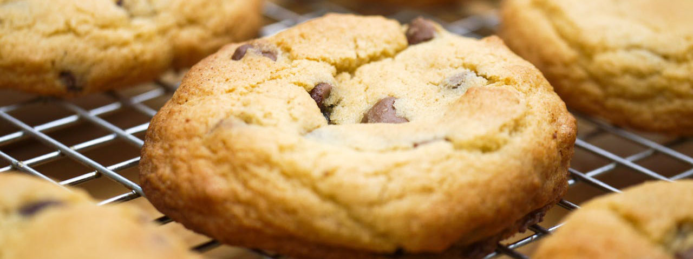
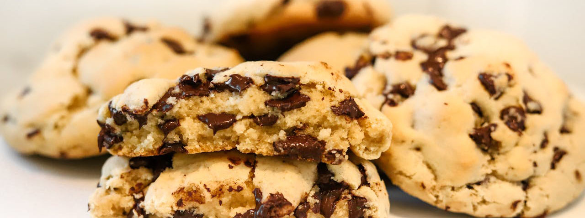

Classic Chocolate Chip Cookies
Embark on a journey of nostalgia with our classic chocolate chip cookies. Universally adored, these golden-brown delights are a timeless
reminder of cherished moments and happy memories. Get ready to bake up a batch of joy and sweetness, perfect for any occasion.

Ingredients
- 1 cup (2 sticks) unsalted butter, softened
- 3/4 cup granulated sugar
- 3/4 cup packed brown sugar
- 1 teaspoon vanilla extract
- 2 large eggs
- 2 1/4 cups all-purpose flour
- 1 teaspoon baking soda
- 1/2 teaspoon salt
- 2 cups semisweet chocolate chips
- 1 cup chopped nuts (optional)
Steps:
- Preheat the oven to 375°F (190°C). Line baking sheets with parchment paper or silicone baking mats.
- In a large mixing bowl, cream together the softened butter, granulated sugar, brown sugar, and vanilla extract until light and fluffy.
- Add the eggs, one at a time, beating well after each addition.
- In a separate bowl, whisk together the flour, baking soda, and salt. Gradually add the dry ingredients to the wet ingredients, mixing until just combined.
- Stir in the chocolate chips and chopped nuts (if using) until evenly distributed throughout the dough.
- Drop rounded tablespoons of dough onto the prepared baking sheets, spacing them about 2 inches apart.
- Bake in the preheated oven for 9 to 11 minutes, or until the edges are golden brown.
- Remove from the oven and allow the cookies to cool on the baking sheets for a few minutes before transferring them to wire racks to cool completely.

Other Chocolate Chip Cookie Recipes
These aren't sponsers; we just love chocolate chip cookies!
Don't forget to enjoy your Class Chocolate Chip Cookies with a tall glass of milk – cookies & milk are the perfect combination!